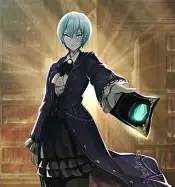
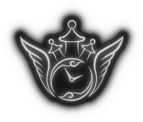
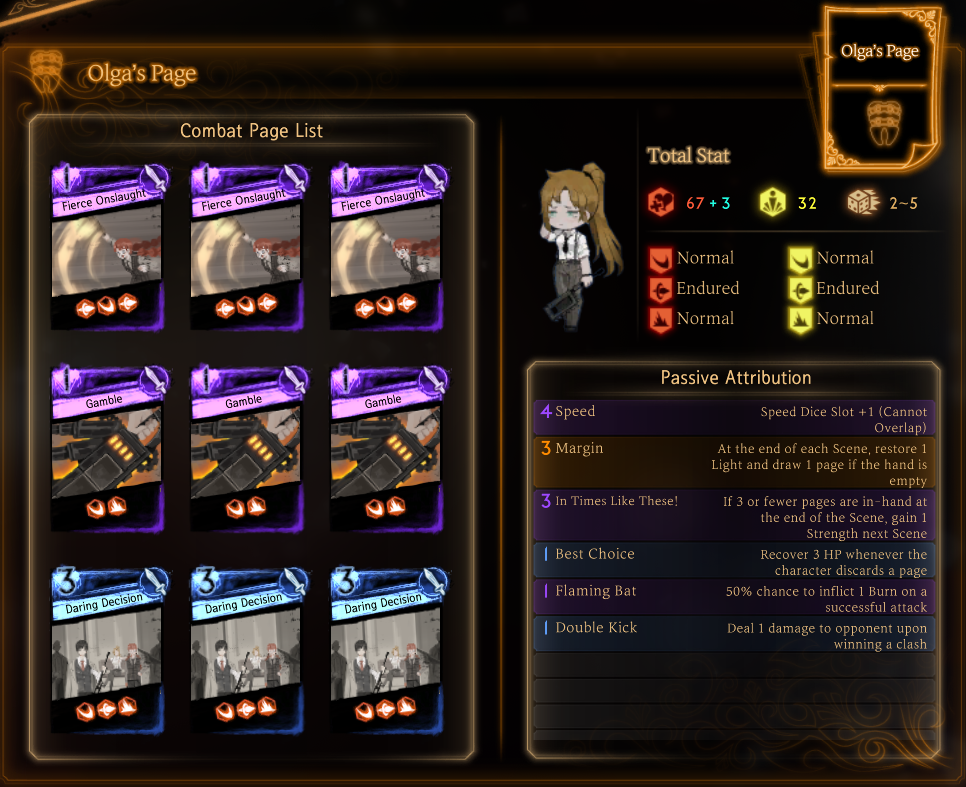
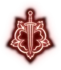
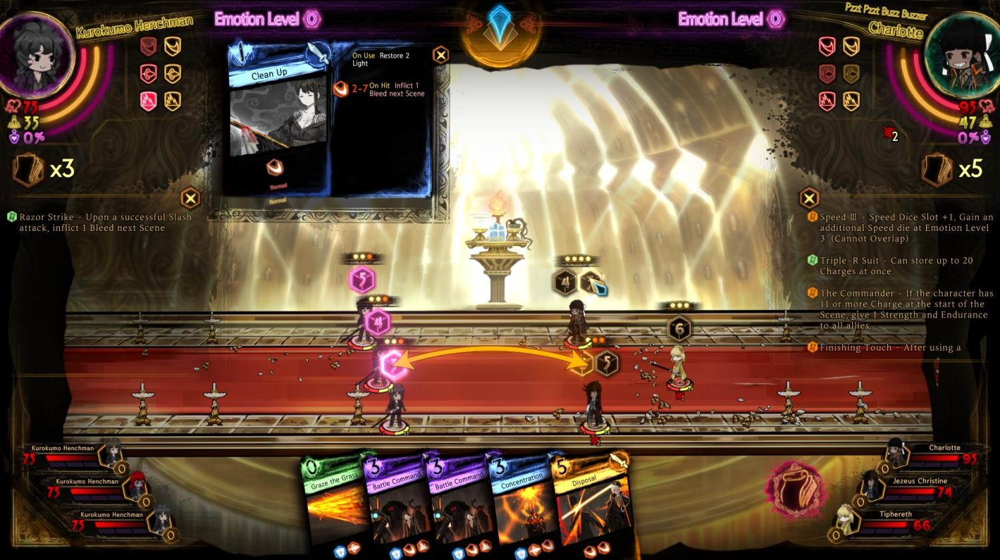
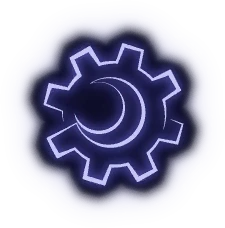

Library of Ruina is the 2nd game released by Project Moon, set in the same universe as the other games. This game is set before Limbus Company but after Lobotomy
Corporation, which is a game analyzed in another tab which sets up many different plot devices inside both Library of Ruina and Limbus Company. Unlike Limbus,
Library of Ruina is NOT a live-service game, instead, it's a deck-builder rpg set inside a massive library called "The Library". The main characters of the game
are Roland and Angela(not to be confused with Angelica), with Roland being a washed up Grade 9 Fixer and Angela being a very humanoid robot(which is technically
a taboo of the city, but that's explored later in the game). The other important characters in this game are the sephirah, who will be explored more in depth
in the Lobotomy Corp page, but for now, they're Angelica's worker who each manage a certain floor of the library. You progress through the game to unlock higher
floors and more librarians on each floor. Similar to Limbus Company, this game is also part visual novel, with most of the story being portrayed through text.
In lore, fights are caused because Angela, the head librarian, send invitations to other people with the promsie of giving them whatever knowledge, or books of
their loved ones that they've lost to the library, they want. If they accept, they get teleported inside the library where they begin to fight a floor of the
library(or floors depending on the fight).

(Angela)
GAME OVERVIEW
Deck Building

As I mentioned before, the library is made up of multiple floors, with each of these floors having 4 assistant librarians that make up the team; a team is
made up of the head of the floor and 4 librarians. Each person can be equipped with 9 attack pages(their attacks) and a key
page (basically giving them different healths, resistences, passives, etc.). Unlike Limbus, it is also set in one place
instead of being all over the city, that being the aformentioned Library. The deck building aspect of the game is directly connected to the story of this game.
When you win a level in this game, you get the "book"s of the characters you killed, having turned them into light and channeled them into pages, which you can
burn to gain more attacks pages and even their identity channeled into a key page that your characters can equip. These pages differ in rarity, decreasing the max
amount of that specific key page you can get depending on the rarity of the page, which is based on how powerful the character is relative to the story. The rarities
are: Paperback, Hardcover, Limited, and Objet d'art, from most common to the rarest. Each key page comes with specific passives that can be attributed to other key pages,
but each key page can only hold a specific amount of passive because of the light mechanic. Better passives take up more light while weaker/less significant passives
require less light.

Fighting


In Library of Ruina, the main system regulating fighting, apart from the deck-building aspect, is the "light" system. This system gives each character a set amount of
max light that will increase depending on certain factors. Attack pages require light in order to be performed, but if you don't have enough light to perform any
attack page, you will be left defenseless from any attacks that target you. Usually, you gain 1 light after every turn or you will gain max light if your max light
has increased, for example, if your emotion level rises. Emotion level is placed on a scale of 0-5, with 0 being the level you start at and the level increases the longer
the fight goes on, allowing the use of abnormality pages and E.G.O. pages at some point. Abnormality and E.G.O. pages are obtained when you finish the realization of a
librarian's floor. Realizations are fights that occur when you pass a certain level and/or get certain books where you have to fight different abnormalities
(more on that in the Lob Corp page, but for now, you just need to know that they're monsters) and you gain the abnormality paged related
to those abnormalities for that specific floor, giving librarians different passive or active effects. However,(I'm wording this differently than what actually happens
in order to avoid spoilers) when you reach the final realization, you will have to fight stronger abnormalities, but as a reward, you get to use the attack of those
abnormalities through the use of E.G.O. pages. Anyways, onto the actual fight. At the start of each turn, every character has to roll a dice in order to indicate
what speed they are at, with characters being able to clash with someone attacking them or someone who has a lower speed than them. Clashes usually work by
seeing which combat page, each of which have a certain amount of dice and the mix/max they can roll, has a higher final power, which each clash win destroying one
of the loser's dice until they don't have dice anymore, thereby activating the effects/attacks of the combat page.
Music

(Plays during an intense bossfight)
Similar to Limbus Company, most of the music that had lyrics in them were composed by Mili, for example,
Gone Angels or String Theocracy, with most of the songs on their "To Kill a Living Book" Album.
Again, Studio EIM makes up most of the non-lyrical music in Library of Ruina, with some notable examples being the Lobby/Main Menu music, and my
personal favorite being the third trumpet/warning battle music that plays during certian abnormality fights that correspond to very strong abnormalities in Lobotomy Corporation. Again,
both of these music composers do an amazing job at setting the tone for whiuchever battle or area you're in currently, ranging from tense during a hard fight, to relaxed when being in the main menu.